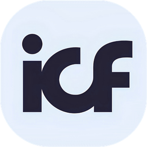
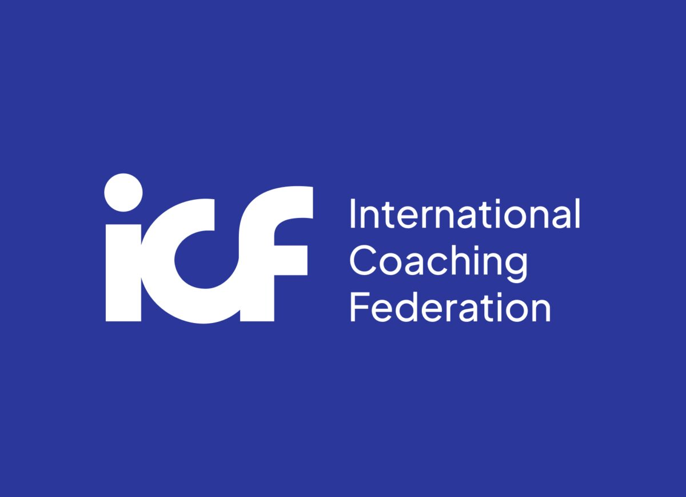
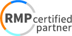
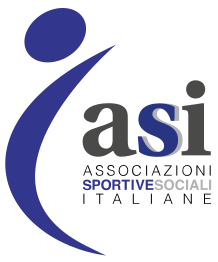
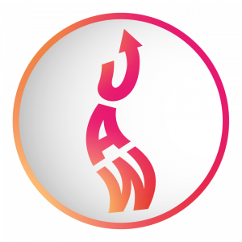

Per te, come persona
Vuoi capire cosa ti muove nelle scelte di carriera, nelle relazioni, nei blocchi che si ripetono. Una chiarezza che nessun test superficiale ti ha dato.
Il test che misura cosa ti muove davvero — con restituzione individuale di un coach certificato.

Scuola ICF Level 2 Reiss Certified PartnerAccreditata e riconosciuta · Partner e certificazioni






Sai cosa dovresti fare, ma non lo fai. Raggiungi obiettivi che non senti tuoi. Ripeti gli stessi schemi. Non è disciplina: è che nessuno ti ha mai mostrato la mappa delle tue motivazioni profonde.
Arrivi dove volevi, ma dentro senti che manca qualcosa. Le tue scelte non parlano la tua lingua.
Cambi lavoro, relazioni, città. Ma lo stesso copione torna. La radice non è nei fatti: è nelle motivazioni.
Non è pigrizia. È che stai spingendo contro ciò che ti muove davvero, invece di usarlo a tuo favore.
Lo strumento sviluppato dallo psicologo Steven Reiss dopo aver studiato oltre 6.000 persone. Misura le 16 motivazioni fondamentali che guidano ogni comportamento — non tipi, non etichette, ma ciò che davvero ti spinge.
Più dimensioni misurate = consapevolezza reale, non un'etichetta.
Ognuno le ha tutte, ma con intensità diverse. La tua combinazione unica è il tuo profilo.
Il bisogno di influenzare, guidare e avere impatto.
Quanto conta l'autonomia e il fare da sé.
La spinta a conoscere, capire e pensare.
Il rapporto con approvazione e sicurezza in te.
Quanta struttura e metodo ti servono.
La tendenza a conservare e accumulare.
La lealtà a principi, gruppo e tradizione.
Il bisogno di giustizia sociale e di senso.
Quanto cerchi compagnia e vita sociale.
Il valore che dai alla vita familiare.
L'importanza di prestigio e riconoscimento.
La spinta a competere e affermarti.
Il posto di bellezza, estetica ed eros.
Il ruolo del cibo e del piacere della tavola.
Il bisogno di movimento ed energia fisica.
Quanta sicurezza emotiva e calma ti servono.
Nessuna combinazione è "giusta" o "sbagliata". Il tuo profilo è semplicemente il tuo — e conoscerlo cambia il modo in cui scegli.
Dal questionario alla consapevolezza — accompagnato da una persona vera.
Online, da dove vuoi. Nessuna risposta giusta o sbagliata: rispondi d'istinto.
I punteggi diventano il tuo profilo motivazionale personale sulle 16 leve.
Un'ora individuale con un coach certificato: dove le motivazioni creano armonia o attrito, e cosa farne.
Uno strumento che funziona a livelli diversi, per obiettivi diversi.
Vuoi capire cosa ti muove nelle scelte di carriera, nelle relazioni, nei blocchi che si ripetono. Una chiarezza che nessun test superficiale ti ha dato.
Coach, HR, manager, formatori, psicologi: uno strumento scientifico da integrare nella tua pratica per leggere ciò che muove le persone.
Il Reiss è la porta d'ingresso nel mondo del coaching Karakter. Da qui parte il percorso verso il Master K-Coach certificato ICF Level 2.
La differenza tra interpretarti a intuito e avere una mappa reale di ciò che ti guida.
Profili e coach accompagnati
Motivazioni misurate dal Reiss
Di scuola a Roma, dal 2011
Persone alla base della ricerca di Reiss
Coach ICF PCC e fondatore di Karakter. Ha portato in Italia l'integrazione del Reiss Motivation Profile nella formazione dei coach: una professione seria parte dalla profondità scientifica e dalla consapevolezza di sé.
Co-fondatrice di Karakter, coach e formatrice. Accompagna persone e aziende con un approccio caldo e rigoroso insieme: ogni Karakter conta, e la crescita più vera parte dalle persone.
Recensioni verificate su Google di chi ha scelto Karakter per il proprio profilo motivazionale.
Il profilo Reiss e la restituzione mi hanno dato una chiarezza che nessun test superficiale mi aveva dato.
Il Reiss ha portato metodo dove prima usavo solo intuito. Ora è parte del mio lavoro da coach.
L'ora con il coach è stata illuminante: mi ha mostrato dove le mie motivazioni creano attrito nel lavoro.
Capire le 16 motivazioni delle persone che gestisco è stato un salto di qualità. Non slogan: dati.
Cercavo profondità e rigore, non frasi fatte. Il Reiss con Karakter è esattamente questo.
Sono partita dal Reiss per curiosità, oggi sto facendo il Master per diventare coach.
Il questionario si compila online in circa 20-25 minuti. Poi elaboriamo il tuo profilo e fissiamo la restituzione: un'ora individuale con un coach certificato Reiss, in presenza a Roma o online.
No. Non esistono risposte giuste o sbagliate: rispondi in modo istintivo e sincero. È proprio la spontaneità a rendere il profilo accurato.
No. Non ti mette in una "categoria" o in un tipo. Misura le tue 16 motivazioni fondamentali — quanto sono intense in te — restituendo una mappa personale di ciò che ti spinge, non un'etichetta.
Il quiz "Scopri il tuo Karakter" è gratuito e ti dà i tuoi 3 Tratti dominanti in 5 minuti. Il Reiss Motivation Profile è lo strumento professionale: misura le 16 motivazioni con restituzione individuale di un'ora con un coach.
Assolutamente no. Il Reiss è utile a chiunque voglia capire cosa lo muove davvero: privati in crescita, founder, manager, professionisti, persone in transizione. La sessione con il coach ti aiuta a tradurre la consapevolezza in azioni concrete.
Entrambe le opzioni sono possibili. Il questionario è sempre online; la restituzione con il coach può avvenire in presenza nella sede di Roma oppure in videochiamata, con la stessa qualità.
Il Test Reiss include il questionario completo e la restituzione individuale di un'ora con un coach certificato. Richiedi informazioni dal form qui sotto: ti inviamo tutti i dettagli, modalità e disponibilità, senza alcun impegno.
Richiedi informazioni sul Test Reiss Motivation Profile: ti ricontattiamo con tutti i dettagli e le disponibilità.
Compila i campi: pensiamo a tutto noi.
Compilando accetti di essere ricontattato/a da Karakter. Nessuno spam.